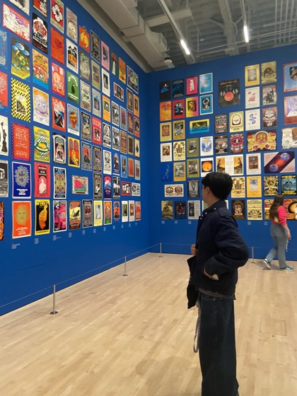
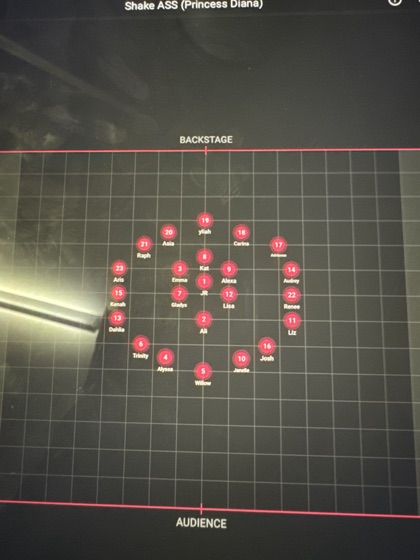

Intro to design 101
I didn’t start designing on a screen, but with pen, a notebook, and fantastical dreams. Like every kid, I used to doodle, but I doodled the lives I aspired to live. During childhood, I drew myself running around with cartoon animals I liked. And as a teen, I hand-drew music and choreography formations for my own team.

